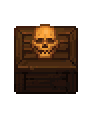
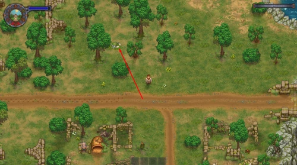

Gerry
| Gerry | |
|---|---|
 | |
Basic Information
| |
Location :
|
Morgue, Workyard |
Role :
|
Guide |

Gerry is a talking skull you found buried behind your home. He guides you through your first days as the graveyard keeper. After the graveyard tutorial, he stays in the morgue and asks for alcohol.
Quests
===Get Gerry Beer +20  ===
Gerry asks for beer which requires you to find Horadric in the village at The Dead Horse tavern. You can use the
===
Gerry asks for beer which requires you to find Horadric in the village at The Dead Horse tavern. You can use the 
A mug of beer you earned as a reward for delivering the letter to Krezvold or purchase one from the tavern (must be  ).
).
20  enables dialogue with Gerry, telling the player how to get to the library and about the Astrologer.
enables dialogue with Gerry, telling the player how to get to the library and about the Astrologer.
Gunter (Breaking Dead DLC)
After the fourth  (19.5 days) and reaching 20
(19.5 days) and reaching 20  with Gerry, return to the morgue. In a cutscene, Gerry will tell you about a zombie chained in the northern part of the church cellar.
with Gerry, return to the morgue. In a cutscene, Gerry will tell you about a zombie chained in the northern part of the church cellar.
Visit the Gunter page for more.
===Get Gerry Wine +20  ===
Gerry still isn't drunk and decides to make it your problem. He wants
===
Gerry still isn't drunk and decides to make it your problem. He wants 
red wine. You can make it yourself or purchase some from Horadric (must be  ). Gerry tells you that the Astrologer had the best wine, but he doesn't sell it.
). Gerry tells you that the Astrologer had the best wine, but he doesn't sell it.
Stranger Sins DLC
The Stranger Sins DLC adds a backstory to Gerry and expands on other characters. It explains the Ancient Contract, the Ancient Curse, and what made the world today.
Get Gerry Cognac



The mound containing the cognac
Wine isn't strong enough for Gerry, who asks you to find him cognac instead. Whenever you speak to him again he will have remembered where he and an old keeper buried some cognac. Several interactable mounds spawn between The Village and the Lighthouse. These look like grass with rocks around them and only spawn after this dialogue.
After digging up the one north of Dig, a cutscene will play where Gerry tells you about what you've found. Krezvold interrupts to tell you that you can't dig in the Village unless you're a landowner.
The Talking Skull
Return to the morgue and speak with Gerry. He will tell you his plan to buy land to open a tavern as a front for digging out the cellar and using the machine. You must speak with Horadric in the tavern and ask to purchase land. Speak to Dig and then return to Horadric and ask to purchase land in Dig's name; this will cost  30 . Horadric will tell you that Cory and Tress can help you, but you can only speak to Corey about building the tavern.
30 . Horadric will tell you that Cory and Tress can help you, but you can only speak to Corey about building the tavern.
You have two options: Pay them  2 to finish the barn and build the tavern. Or give them: 12 ×
2 to finish the barn and build the tavern. Or give them: 12 ×
simple iron parts, 12 ×
Wooden plank, and 12 ×
nails for the barn, and pay  50 to build The Talking Skull.
If you pay them
50 to build The Talking Skull.
If you pay them  2 , despite saying the tavern will be ready by dawn, it will when you next sleep. If you provided materials, they will finish the barn the next day and ask for
2 , despite saying the tavern will be ready by dawn, it will when you next sleep. If you provided materials, they will finish the barn the next day and ask for  50 . The next time you sleep, they will have finished the tavern.
50 . The next time you sleep, they will have finished the tavern.
Gerry's task will tell you to speak to him once the tavern is finished. He will be in the morgue, although you don't need to speak to him. He will be in the talking skull the first time you enter. You can also teleport there with the teleportstone as soon as you wake.
When you first enter the Talking Skull, Gerry will politely ask you to make a Barman Doll. Do this at any tier carpenter's workbench. Once you have made the barman and placed it behind the bar, there will be a cutscene. Gerry will tell you to meet him in the Talking Skull Cellar after speaking with the barman; Gerry will not speak to you until you do.
Visit the Talking Skull page for more details on that aspect of Stranger Sins.
Blast from the Past
Once you speak to Gerry and break the wall, he will send you on 17 fetch quests, each with its own cutscene. Most villagers have items, but some are buried. Gerry hopes the machine will help him remember who he is.
Gerry will ask for the following items successively:
| No. | Item | Location |
|---|---|---|
| 1. | Statuette of the Ancient God |
Horadric |
| 2. | Flask of wine |
Farmer's Son |
| 3. | Door Hinge |
Buried between The Village and Dig |
| 4. | Legionary Helm |
Farmer |
| 5. | Ancient Lockpicks |
Miller |
| 6. | Priests Medallion |
Dig |
| 7. | The Legionary Dagger |
Krezvold |
| 8. | Belt Buckle |
Woodcutter |
| 9. | Clay Shards |
Adam |
| 10. | Amulet of The Ancient God |
Lighthouse Keeper |
| 11. | Ancient Shackles |
Buried on the west bank of the River,
between the river and The Swamp |
| 12. | Ancient Pickaxe |
Koukol |
| 13. | Ancient Keys |
Adam |
| 14. | Any: | Witch Hill or Inventory
Giving Gerry any of the other items only results in him saying: "Nope, that doesn't work. You dig up anything else?" and you will not get the item(s) back. As there is no extra reward for giving these items, it is recommended you ONLY give Gerry the Clay Pot. |
| 15. | Priests Signet |
Dig |
| 16. | Priestess Ring |
Farmer |
| 17. | A Brick from The Church |
Church |
After completing the fetch quest you then will have to dig up a a chest near the new tavern. The chest will be located north-west of the tavern, after digging up the chest you will be rewarded with  10
10
Better Save Soul DLC
Get the old rusty key
After meeting Euric, he will ask you about the old rusty key and mentions about Gerry, you go to Gerry and talk to him about a bath, this being just a plan to get the key without mentioning it to Gerry. This questline requires 1×
A mug of beer and 1×
River sand to obtain the old rusty key item to continue the quest. (Note: No other quality beer is acceptable.)
After repairing the bed in Euric's room, you get a old teeth (need to check the in game name), giving it to Gerry will reward you with some dialogues.
| |||||||||||||||||||||||||||||